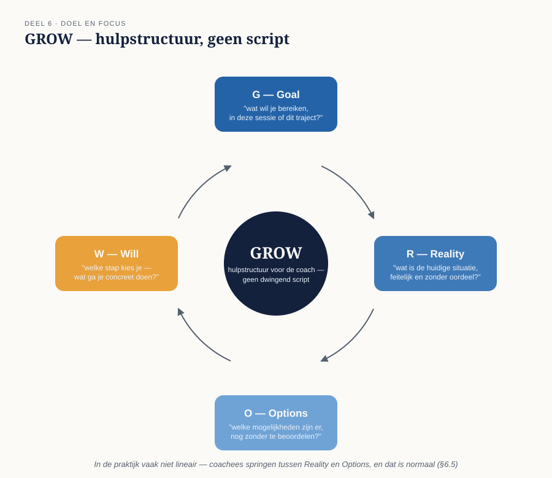

Cursus Coachen · Niveau 1 (NOBCO/EMCC EIA Foundation · ICF Level 1) · Deel 6 van 30
Doel geeft richting.
Deel 5 gaf u het instrument — de krachtige vraag; dit deel geeft er een richting aan. Een sessie zonder helder doel drijft, hoe goed de vragen ook zijn. U leert sessiedoel van trajectdoel te onderscheiden, de vraag achter de vraag te stellen, en maakt kennis met GROW — het eerste model waarop u het drieluik uit deel 1 concreet en volledig toepast.
7secties
±3uleestijd + werkboek
4controlevragen
1figuren
Positionering. Deze cursus bereidt voor op twee routes tegelijk — het EMCC Competence Framework (NOBCO/EMCC EIA) en de ICF Core Competencies — en vervangt geen van beide officiële trajecten. Studeer voor een accreditatie of credential altijd óók het bronmateriaal van NOBCO/EMCC of ICF zelf.
Niveau 1: ➊ Wat is coaching? → ➋ Houding en aanwezigheid → ➌ Contracteren → ➍ Luisteren → ➎ Vragen stellen → ➏ Doel en focus (hier) → ➐ Reflecteren en spiegelen → ➑ Sessieopbouw en afronding → ➒ Ethiek en grenzen (basis) → ➓ Synthese
01
Van vraag naar richting
⏱ 15 min
Deel 5 gaf u het instrument (de krachtige vraag); dit deel geeft er een richting aan. Een sessie zonder helder doel drijft, hoe goed de vragen ook zijn. Dit deel behandelt het onderscheid tussen sessiedoel en trajectdoel, de vraag achter de vraag, en het meest gebruikte doelmodel in coaching: GROW.
Aan het eind van dit deel kunt u:
sessiedoel en trajectdoel onderscheiden, en aan het begin van een sessie expliciet naar het sessiedoel vragen;
de vraag achter de vraag toepassen, zonder daarbij zelf al te veronderstellen wat die onderliggende vraag is;
GROW gebruiken als hulpstructuur, zonder het als dwingend script te hanteren;
GROW — en elk volgend model — beoordelen via het drieluik claim → status → waarde uit deel 1.
02
Sessiedoel vs. trajectdoel
⏱ 20 min
Een trajectdoel is waar de coachee aan het begin van het hele traject naartoe wil (vastgelegd in het contract, deel 3). Een sessiedoel is wat er in déze ene sessie bereikt moet worden — vaak een concrete stap richting het trajectdoel, soms een zijpad dat toch relevant blijkt.
Een veelgemaakte fout bij beginnende coaches is het trajectdoel bij elke sessie opnieuw willen "oplossen". Vraag daarom altijd, aan het begin van een sessie: "wat zou je willen dat er aan het eind van dít gesprek anders is?" — een scherpere, kleinere vraag dan het trajectdoel.
Controlevraag
Uit Werkboek deel 6, Opdracht 6.1 — sessiedoel formuleren
1Een coachee opent met: "ik wil het hebben over mijn werk-privébalans, dat gaat al een tijdje niet lekker." Formuleer een vraag die dit brede onderwerp omzet in een concreet sessiedoel.Toon antwoord
Een veelvoorkomend eerste antwoord — "wat wil je vandaag bereiken met werk-privébalans?" — is nog te breed; het onderwerp blijft even groot. Scherper: "waar zou je aan het eind van dit gesprek een volgende stap in willen zien?" Dit maakt het onderwerp tijdgebonden en concreet, zonder het trajectdoel (de hele werk-privébalans) in één sessie te willen oplossen.
03
De vraag achter de vraag
⏱ 25 min
Wat een coachee als eerste noemt, is niet altijd de kern. "Ik wil beter kunnen delegeren" kan bij nader onderzoek blijken te gaan over vertrouwen, over perfectionisme, of over angst om overbodig te lijken. De vraag achter de vraag vindt u niet door te raden, maar door door te vragen op niveau 2 (deel 4): "wat zou het je opleveren als je dat kon?" of "wat maakt dat dit nu belangrijk voor je is?"
Dit is geen truc om "de echte vraag" te ontmaskeren — soms is de eerste vraag ook gewoon de juiste. Het is een gewoonte om niet voetstoots aan te nemen dat het eerste antwoord het hele verhaal is.
Controlevragen
Uit Werkboek deel 6, Opdracht 6.2 — de vraag achter de vraag (Marit)
aMarit zegt: "Ik wil beter worden in delegeren." Formuleer een eerste vervolgvraag die de vraag achter de vraag kan blootleggen, zonder al te veronderstellen wat die is.Toon antwoord
"Wat zou het je opleveren als je dat kon?" — onderzoekt de betekenis achter het doel zonder er zelf al invulling aan te geven (bijvoorbeeld door te suggereren dat het over vertrouwen of perfectionisme gaat).
bFormuleer een tweede, andersoortige vervolgvraag met hetzelfde doel.Toon antwoord
"Wat maakt dat dit nu belangrijk voor je is?" — richt zich op de actualiteit van de vraag (waarom nu) in plaats van op de opbrengst, en kan een ander deel van het antwoord naar boven halen.
04
GROW — het model
⏱ 30 min
GROW is het meest gebruikte doelmodel in coaching, met vier stappen:
Goal — wat wil je bereiken, in deze sessie en/of dit traject?
Reality — wat is de huidige situatie, feitelijk en zonder oordeel?
Options — welke mogelijkheden zijn er, zonder ze meteen te beoordelen op haalbaarheid?
Will (of: Way forward) — welke stap kies je, en wat ga je concreet doen?

Figuur 6-1 — GROW als cirkel, met een typische vraag per stap
05
GROW door het drieluik: claim → status → waarde
⏱ 25 min
Dit is het eerste model in de cursus waarop u het drieluik uit deel 1 (§1.5) concreet en volledig toepast:
GROW langs het drieluik
1. Claim — GROW claimt dat elk coachgesprek gestructureerd kan worden langs deze vier stappen, in min of meer die volgorde. 2. Status — GROW is geen wetenschappelijk gevalideerd model in de zin van experimenteel onderzoek; het is een praktijkmodel, ontstaan uit ervaring (bekend via onder anderen Sir John Whitmore), breed gebruikt en herkenbaar, maar niet "bewezen" in strikte zin. De volgorde is in de praktijk vaak minder lineair dan het model suggereert — coachees springen tussen Reality en Options, en dat is normaal. 3. Waarde — als hulpstructuur, vooral voor de coach zelf: een houvast om te weten waar je in het gesprek bent en wat de volgende logische stap zou kunnen zijn. Niet als script dat de coachee door vier vakjes moet leiden.
Controlevraag
Uit Werkboek deel 6, Opdracht 6.4 — het drieluik toepassen op GROW
1Vul voor GROW de drie regels van het drieluik in: claim, status, waarde.Toon antwoord
Claim: elk coachgesprek kan gestructureerd worden langs Goal-Reality-Options-Will, in min of meer die volgorde. Status: geen wetenschappelijk gevalideerd model, wel een breed gebruikt en herkenbaar praktijkmodel; de volgorde is in de praktijk vaak minder lineair dan het model suggereert. Waarde: een hulpstructuur voor de coach zelf om te weten waar het gesprek staat — geen script dat de coachee moet doorlopen. Vergelijk uw eigen antwoord vooral op de status-regel: cursisten die GROW al kennen als "hét" coachmodel formuleren de status vaak te stellig ("bewezen effectief"), terwijl de eerlijke status is: praktijkmodel, niet experimenteel gevalideerd.
06
Toepassing: Marit
⏱ 40 min
Marit's eerste geformuleerde doel — "ik wil zelfverzekerder worden" — is breed en weinig sturend voor een sessie. Door de vraag achter de vraag te stellen ("wat zou zelfverzekerder eruitzien, in een concreet moment?") en GROW toe te passen, wordt dit een sessiedoel dat werkbaar is: bijvoorbeeld "ik wil vandaag helder krijgen wat me tegenhoudt om kritiek te geven aan mijn collega."
Oefening — geen vaste antwoordsleutel
Werkboek Opdracht 6.3: doorloop in duo's de vier GROW-stappen met Marit's sessiedoel, met minimaal één vraag per stap. Verwacht dat het gesprek niet netjes lineair door G-R-O-W loopt — vrijwel elk duo merkt dat het springt tussen Reality en Options. Dat is geen fout, het is precies wat §6.5 als status van GROW benoemt. Let ook op het omgekeerde risico: zo star aan de volgorde vasthouden dat het gesprek geforceerd aanvoelt.
07
Samenvatting
⏱ 10 min
Onderscheid sessiedoel (dit gesprek) van trajectdoel (het hele traject) — vraag er expliciet naar aan het begin van elke sessie.
De vraag achter de vraag: het eerste antwoord is een startpunt, niet automatisch de kern.
GROW: Goal, Reality, Options, Will — een hulpstructuur, geen dwingend script.
Beoordeel GROW (en elk volgend model) via claim → status → waarde: praktijkmodel, niet wetenschappelijk bewezen, waardevol als houvast.
Reflectievragen — Werkboek deel 6, afsluitend
Herkent u bij uzelf de neiging om het trajectdoel bij elke sessie opnieuw te willen "oplossen"? Wat verandert er in hoe u naar modellen kijkt, nu u GROW voor het eerst via het drieluik heeft beoordeeld in plaats van als vaststaande waarheid? Deze vragen hebben geen vaste antwoordsleutel — het gaat om uw eigen ontwikkeling.
Verder naar deel 7
Deel 7 gaat over het teruggeven van wat u als coach waarneemt: spiegelen, feedback en confronteren, in oplopende mate van eigen inbreng.